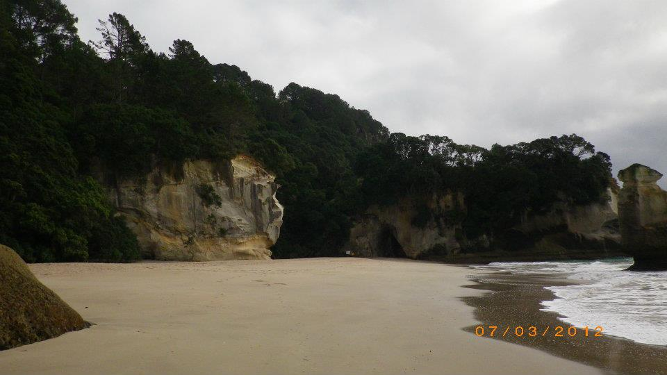
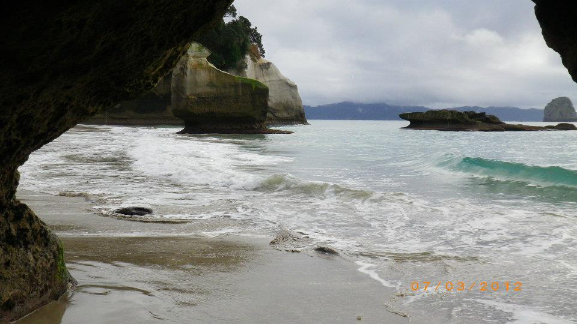
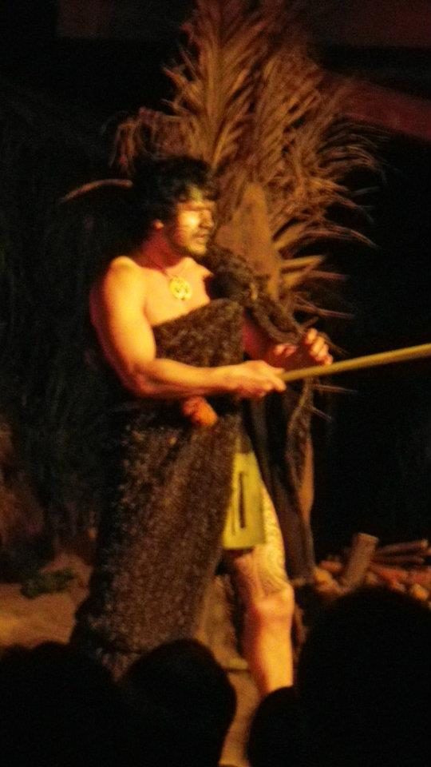
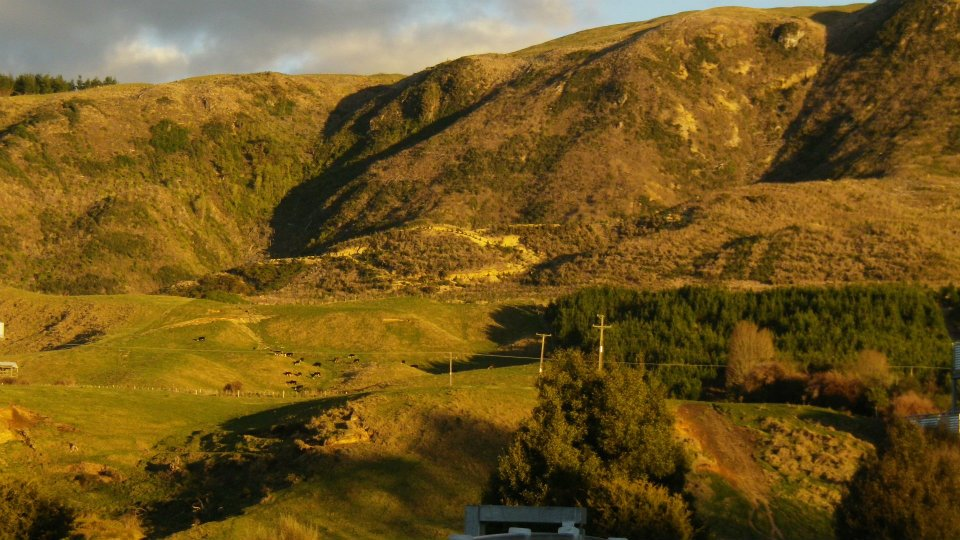
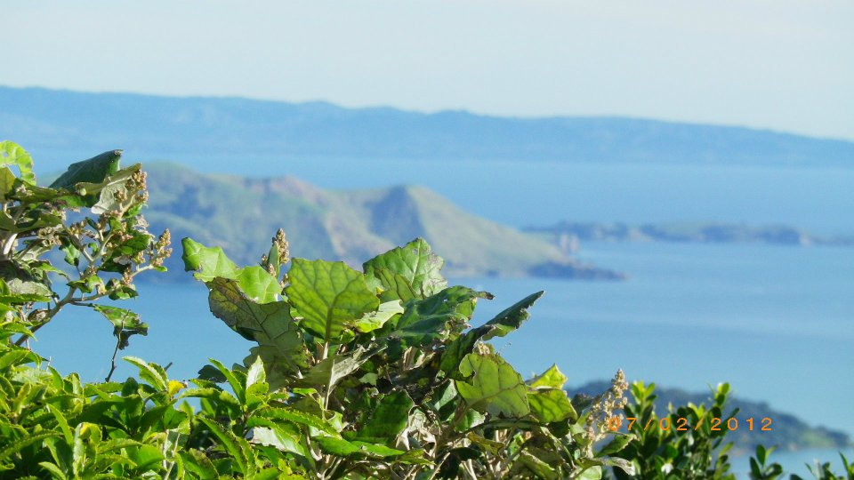
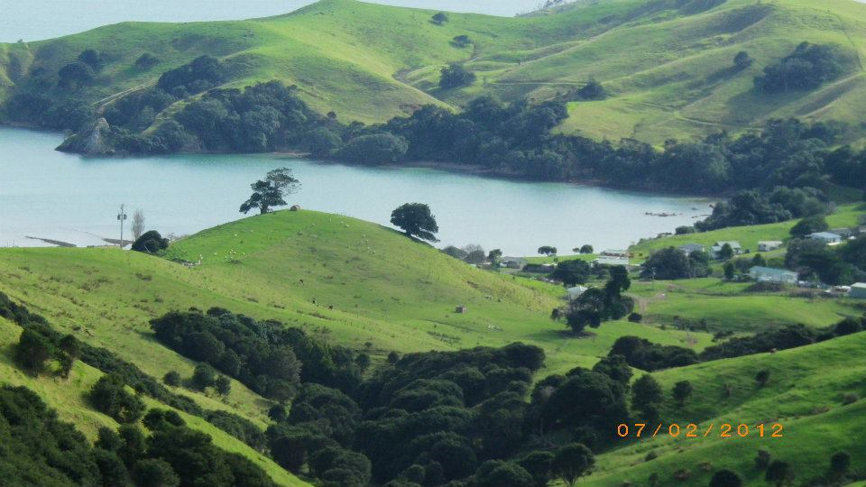
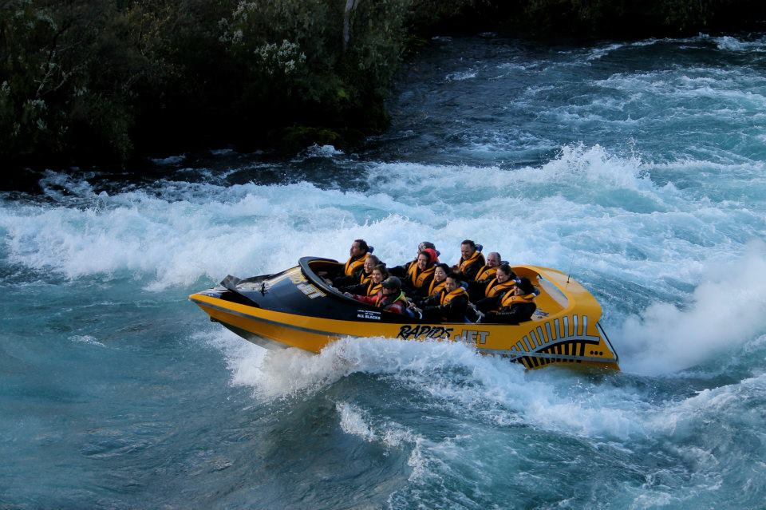
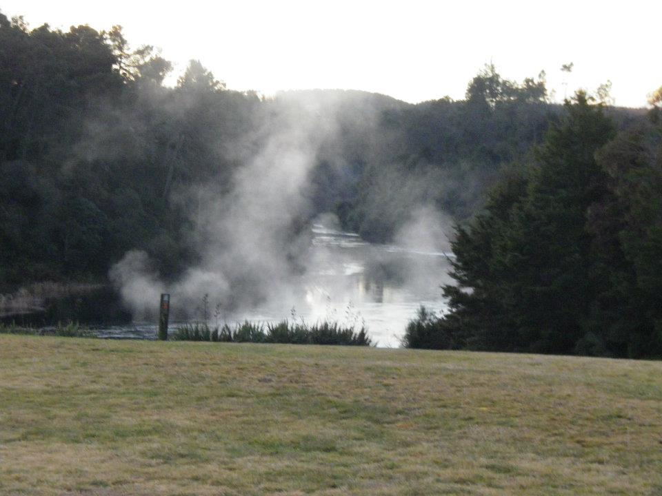
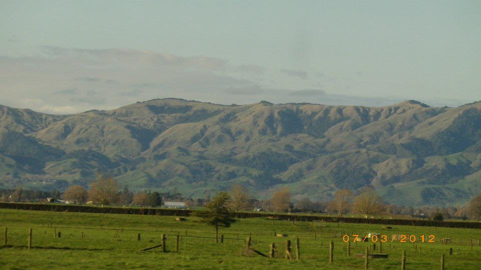

After Australia, we flew into Christchurch and picked up a Haka tour — and this is where things got properly special. New Zealand is one of those places where the scenery genuinely does not look real.
We travelled across both islands — from the Southern Alps to the North Island. Every single day felt different. One minute you're by the ocean, the next you're in mountains, then suddenly geothermal Rotorua or cruising through Milford Sound.








